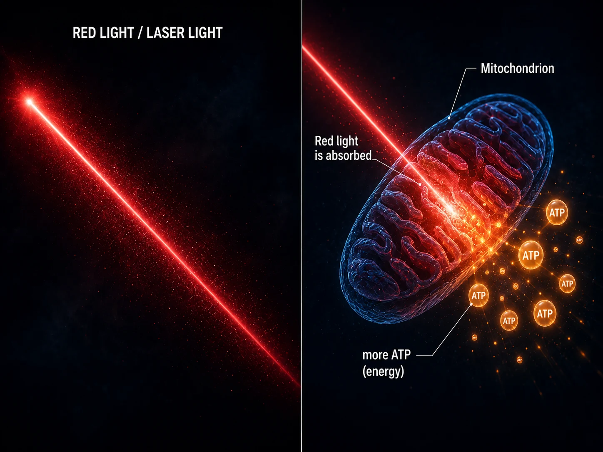
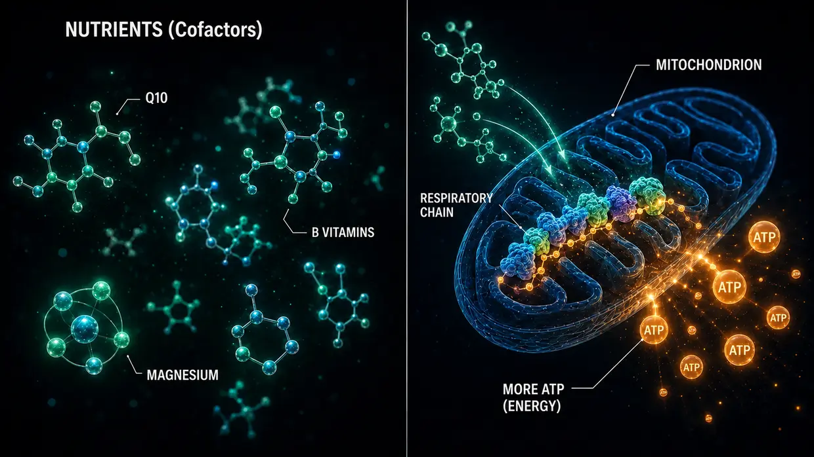

Scientific Sources & Clinical Evidence
This page lays out the foundation for everything I write on this website. My model is my personal interpretation of what happened at the cellular level in my own tinnitus. But the individual building blocks—the crosslinkers between actin filaments in the stereocilia, calpain activation under noise, ATP metabolism, XIRP2 repair, central gain in the brain, the local HPA axis in the cochlea, and the mitochondrial effects of Q10, B vitamins, and niacin—are not ideas I invented. They are documented in research and have been tested in medical practice.
Introduction: Two Kinds of Evidence
An honest note up front: I bring together two kinds of evidence on this page—and I deliberately place them side by side without automatically ranking one above the other.
First: basic-research mechanism studies on crosslinkers, calpains, and related processes. These are peer-reviewed papers (reviewed by independent experts) in journals such as Nature Communications, the Journal of Neuroscience, PNAS, and eLife. They show how the cellular machinery (the processes within individual cells) works—how crosslinkers stabilize stereocilia, how noise activates calpains, how XIRP2 gives damaged structures temporary support, and how raising ATP can restore hearing after noise damage as far as the body’s individual capacity allows. These studies are indispensable for understanding my model of noise-induced tinnitus.
Second: clinical-practice evidence from experienced doctors (what they have observed and documented directly in real patients over many years). This includes voices such as Dr. Lutz Wilden, who has continuously treated inner-ear patients with Low-Level Laser Therapy since 1987—more than 35 years—and routinely records audiograms before and after treatment. It also includes thousands of home-laser users worldwide who accompany their own treatment with follow-up audiometry. In Switzerland, Tinnitool has likewise supplied thousands of patients since the 1990s using the same proposed chain of effects (LLLT → higher ATP in auditory cells). Then there are the Hahn group in Prague (540 patients across two published studies), Kyoto University in Japan, and a Brazilian research group—each reporting measurable improvements when the laser parameters were strong enough. Farther down, I also classify honestly the well-controlled studies that found nothing with weak laser doses. And there is Dr. Dietrich Klinghardt’s decades of work on heavy-metal and toxin burdens. Much of this practical experience has not appeared in major journals (such as Nature Communications)—for reasons Wilden himself discusses. That does not change the fact that a considerable number of real patients have recovered through these approaches over recent decades, with audiometric documentation.
Why both kinds of source matter
I find it more honest to place both forms of evidence side by side than to pretend peer review is the only truth worth taking seriously. In my view, a large share of tinnitus research funding flows instead into hearing-aid development and patent-protected drug pipelines. There is simply little institutional research interest in non-patentable nutrient combinations, specific high-dose laser protocols, or detoxification protocols.
I am not a doctor, scientist, or professional researcher. I am a former sufferer who recovered twice; the available audiometric records relate exclusively to the first episode. I have read, researched, and experimented obsessively. When I cite a study or a doctor here, that does not prove that my route will work for you. It means that the individual building blocks I rely on are taken seriously in research and practice. If your symptoms are acute—especially acute tinnitus or hearing loss—please see an ENT specialist first so that organic causes can be assessed.
One thing up front before we get into the details: the most important insight from all my research is a pattern I kept finding. Wherever energy production in auditory hair cells was meaningfully increased, tinnitus improved. Three completely different routes, one common denominator. I show you that in detail farther down: if you want to jump straight there, click here. Everyone else: let me first take you through the foundation—how the ear is built and what goes wrong.
Part 1: Mechanism Studies from Basic Research
Crosslinkers Between the Actin Filaments in Stereocilia
On the main page I compare the stereocilia to a bundle of uncooked spaghetti held together by short protein bridges—the crosslinkers. These crosslinkers aren’t something I made up. They are three concrete protein families—Plastin/Fimbrin (PLS1), Espin (ESPN), and Fascin-2 (FSCN2)—and their existence and function in the stereocilia have been molecularly documented for over 20 years.
Krey JF, Krystofiak ES, Dumont RA, et al. (2016). Plastin 1 widens stereocilia by transforming actin filament packing from hexagonal to liquid. Journal of Cell Biology, 215(4), 467–482. DOI: 10.1083/jcb.201606036. PMID: 27811163. Link: pmc.ncbi.nlm.nih.gov
The key study quantifying the crosslinkers. Using mass spectrometry, Krey et al. demonstrated that a single stereocilium contains roughly 30,500 plastin-1 molecules, 16,100 fascin-2 molecules, and 14,800 espin molecules between the actin filaments. After actin itself, plastin-1 is the second-most-abundant protein in the entire stereocilium. Mice lacking functional plastin-1 or fascin-2 showed reduced hearing function; double mutants were the most severely affected. Stereocilia without plastin-1 are shorter and thinner than wildtype stereocilia. That’s the direct experimental proof that the crosslinkers actually maintain the structural integrity of the stereocilia.
Perrin BJ, Strandjord DM, Narayanan P, et al. (2013). β-Actin and Fascin-2 Cooperate to Maintain Stereocilia Length. Journal of Neuroscience, 33(19), 8114–8121. DOI: 10.1523/JNEUROSCI.0238-13.2013. PMID: 23658152. Link: pubmed.ncbi.nlm.nih.gov
Direct evidence of what happens when fascin-2 doesn’t function properly: mice with a fascin-2 mutation show progressive, high-frequency hearing loss and a specific shortening of the second and third rows of stereocilia. The mutant fascin-2 variant still binds to actin, but can no longer effectively crosslink the filaments—and that’s exactly why the stereocilia lose their length. That’s the same structural endpoint I describe on the main page for noise-induced crosslinker loss, just simulated here through a genetic mutation rather than calpain cleavage.
Sekerková G, Zheng L, Loomis PA, et al. (2004). Espins are multifunctional actin cytoskeletal regulatory proteins in the microvilli of chemosensory and mechanosensory cells. Journal of Neuroscience, 24(23), 5445–5456. DOI: 10.1523/JNEUROSCI.1279-04.2004. PMID: 15190118. Link: pubmed.ncbi.nlm.nih.gov
The structural characterization of espin as an actin crosslinker in stereocilia. Espin is identified as a bundling protein for the parallel actin filaments and is not inhibited by calcium—which matters, because the interior of the stereocilia is exposed to calcium fluctuations during normal function. Mice with defective espins are deaf and have balance disorders. Espin mutations also cause inherited deafness in humans.
What this all means together: If the three crosslinkers—plastin/fimbrin, espin, fascin-2—already produce hearing loss and structural stereocilia defects through genetic mutation or knockout, it is biologically plausible that an acquired, noise-induced calpain cleavage of these or related crosslinkers—as I describe on the main page—could produce the same structural endpoint.
Calpain Activation Under Noise
During noise exposure, large amounts of calcium flood into the hair cell. This calcium overload activates calpains—calcium-dependent protease enzymes that subsequently cleave actin-crosslinking proteins. That this mechanism is real has been documented by two independent research labs using different calpain inhibitors.
Lai R, Fang Q, Wu F, Pan S, Haque K, Sha SH. (2023). Prevention of noise-induced hearing loss by calpain inhibitor MDL-28170 is associated with upregulation of PI3K/Akt survival signaling pathway. Frontiers in Cellular Neuroscience, 17, 1199656. DOI: 10.3389/fncel.2023.1199656. Link: pmc.ncbi.nlm.nih.gov
Direct evidence for the calpain mechanism: noise activates µ-calpain and m-calpain in the hair cells, and the calpain inhibitor MDL-28170 prevents both hearing loss and synapse loss. The study additionally shows that calpain cleaves the structural protein α-fodrin—a spectrin-actin crosslinker in the cellular cortex. That’s not exactly the same crosslinker type as the stereocilia-specific plastin/espin/fascin-2, but it confirms that calpain is activated during noise exposure and attacks actin-crosslinking proteins. That the stereocilia crosslinkers might also be affected is a plausible hypothesis arising from this convergence.
Yamaguchi T, Yoneyama M, Ogita K. (2017). Calpain inhibitor alleviates permanent hearing loss induced by intense noise by preventing disruption of gap junction-mediated intercellular communication in the cochlear spiral ligament. European Journal of Pharmacology, 803, 187–194. DOI: 10.1016/j.ejphar.2017.03.058. PMID: 28366808. Link: pubmed.ncbi.nlm.nih.gov
Confirms the calpain damage mechanism from a second lab using a different inhibitor (PD150606). Extends the picture to a second site of damage: under noise, calpain also attacks gap junction communication in the spiral ligament—the lateral cochlear wall. Noise damage is never confined to a single location.
Background reading: Fettiplace R, Hackney CM. (2006). The sensory and motor roles of auditory hair cells. Nature Reviews Neuroscience, 7(1), 19–29. The classic overview of hair cell architecture and function.
Actin Repair Through XIRP2 (Phase 1)
Wagner EL, Im JS, Sala S, et al. (2023). Repair of noise-induced damage to stereocilia F-actin cores is facilitated by XIRP2 and its novel mechanosensor domain. eLife, 12, e72681. DOI: 10.7554/eLife.72681. PMID: 37294664. Link: elifesciences.org/articles/72681
The key mechanistic paper on hair cell self-repair. Under noise, measurable “gaps” form in the F-actin core of the stereocilia. In mice, these gaps are closed within a week by freshly synthesized γ-actin. The repair protein XIRP2 mechanically detects the damage and initiates the repair. Without XIRP2, the damage remains permanent.
On the main page I describe XIRP2 as “duct tape” that gives the breaks temporary structural support (Phase 1). The actual Phase 2 repair—building fresh actin and inserting new crosslinkers—takes about a week in this study, in perfectly cared-for laboratory mice. The decisive question is what that means for a stressed adult human who is also stuck in an energetic hamster wheel, because that person may be missing precisely the energy this repair requires.
NIH-funded (R01DC021176).
ATP Elevation as a Repair Lever: AC102
This is the centerpiece of my noise protocol on the pharmacological track: in my view, when a cell lacks energy, it repairs itself too slowly and too incompletely to keep pace with daily strain. The studies below show that this idea is being taken seriously from a pharmaceutical angle—a Berlin company is developing a drug aimed at this very mechanism.
Rommelspacher H, Bera S, Brommer B, Ward R et al. (2024). A single dose of AC102 restores hearing in a guinea pig model of noise-induced hearing loss to almost prenoise levels. Proceedings of the National Academy of Sciences (PNAS), 121(15), e2314763121. PMID: 38557194. Link: pmc.ncbi.nlm.nih.gov
The core study on AC102. In vitro tests showed that AC102 substantially elevates cellular ATP production while simultaneously breaking down reactive oxygen species (ROS). In the animal model, a single dose significantly improved hearing after noise trauma—described in the study title as “almost to prenoise levels” (specifically: 13–31 dB improvement from an average noise-induced hearing loss of 80 dB—significant, but not full restoration). The mechanisms—driving up ATP production, reducing ROS, protecting synapses—are exactly the mechanics of my model, just pharmacologically forced.
Tziridis K, Rasheed J, Kwiatkowska M, et al. (2025). A Single Dose of AC102 Reverts Tinnitus by Restoring Ribbon Synapses in Noise-Exposed Mongolian Gerbils. International Journal of Molecular Sciences, 26(11), 5124. Link: mdpi.com
This study additionally tested whether AC102 also reverses tinnitus-specific behavioral patterns. Result: yes, largely—and the ribbon synapses between hair cells and auditory nerve recovered significantly. Direct evidence that the continuous glutamate firing at the auditory nerve stops once cellular energy comes back.
Nieratschker M, Yildiz E, Gerlitz M, et al. (2024). A preoperative dose of the pyridoindole AC102 improves the recovery of residual hearing in a gerbil animal model of cochlear implantation. Cell Death & Disease, 15, 531. DOI: 10.1038/s41419-024-06854-9. Link: nature.com
Extends the AC102 evidence to a second damage track: the compound also protects residual hearing after trauma caused by cochlear implantation. That shows the mechanism works independently of the damage trigger—whether mechanical trauma from noise or from surgery, the cellular emergency cascade is the same, and the ATP lever functions in both cases.
AudioCure Pharma GmbH. Clinical Study NCT05776459. AC102 is in a Europe-wide Phase 2 study in patients with sudden sensorineural hearing loss (SSNHL)—210 patients enrolled, recruitment completed, results still pending. Link: clinicaltrials.gov/study/NCT05776459
Stress, the HPA Axis, and the Cochlea as a Neuroendocrine Organ
Stress-induced tinnitus is scientifically harder to pin down than noise-induced tinnitus. For my model, the crucial point is this: general chronic stress does not create a tinnitus tone of its own through the HPA axis. It can, however, make the inner ear more vulnerable. Activation of the sympathetic nervous system can reduce blood flow; when the vessels of the stria vascularis constrict, the inner ear may become more susceptible to damage from noise or other influences. The following studies on the cochlea’s local HPA signaling system describe physiological processes in the inner ear. I do not derive from them an independent HPA pathway that generates tinnitus.
Graham CE, Vetter DE. (2011). The mouse cochlea expresses a local hypothalamic-pituitary-adrenal equivalent signaling system and requires corticotropin-releasing factor receptor 1 to establish normal hair cell innervation and cochlear sensitivity. Journal of Neuroscience, 31(4), 1267–1278. DOI: 10.1523/JNEUROSCI.4545-10.2011. PMID: 21273411. Link: pubmed.ncbi.nlm.nih.gov
The key study. The mouse cochlea expresses the entire HPA-axis signaling system locally: corticotropin-releasing factor (CRF), the CRF1 receptor, ACTH, the mineralocorticoid receptor, and the glucocorticoid receptor. Mice lacking the CRF1 receptor show disrupted hair-cell innervation and reduced cochlear sensitivity. The study therefore describes a local regulatory system in the cochlea; it does not provide evidence for an independent HPA pathway to tinnitus.
Graham CE, Basappa J, Vetter DE. (2010). A corticotropin-releasing factor system expressed in the cochlea modulates hearing sensitivity and protects against noise-induced hearing loss. Neurobiology of Disease, 38(2), 246–258. PMID: 20109547. Link: pubmed.ncbi.nlm.nih.gov
The predecessor to Graham and Vetter’s 2011 study shows that the cochlea’s local CRF system modulates hearing sensitivity and can protect against noise-induced hearing loss.
Furuta H, Mori N, Sato C, et al. (1994). Mineralocorticoid type I receptor in the rat cochlea: mRNA identification by polymerase chain reaction (PCR) and in situ hybridization. Hearing Research, 78(2), 175–180. PMID: 7982810. Link: pubmed.ncbi.nlm.nih.gov
The historical first description: mineralocorticoid receptors are expressed in the stria vascularis of the cochlea—in the inner ear’s “battery,” which maintains the potassium reservoir in the endolymph. Cortisol can modulate potassium secretion there through mineralocorticoid receptors.
Mazurek B, Haupt H, Olze H, Szczepek AJ. (2012). Stress and tinnitus – from bedside to bench and back. Frontiers in Systems Neuroscience, 6, 47. DOI: 10.3389/fnsys.2012.00047. Link: frontiersin.org
In their systematic synthesis from Berlin’s Charité, Mazurek and Szczepek combine the original Graham/Vetter and Furuta findings into three testable hypotheses for how stress might trigger tinnitus: through the cochlea’s local HPA system, through cortisol modulation of mineralocorticoid receptors in the stria vascularis (with resulting effects on potassium secretion), and through glutamate-mediated plasticity in the auditory pathway. These are the authors’ hypotheses; I do not adopt them as my model of how the tone arises.
Hébert S, Lupien SJ. (2007). The sound of stress: Blunted cortisol reactivity to psychosocial stress in tinnitus sufferers. Neuroscience Letters, 411(2), 138–142. DOI: 10.1016/j.neulet.2006.10.028. PMID: 17084027. Link: pubmed.ncbi.nlm.nih.gov
People with tinnitus showed a delayed and blunted cortisol response to acute psychosocial stress. The study therefore describes an altered stress response in the people examined; it does not show that HPA-axis exhaustion causes tinnitus.
Manohar S, Chen GD, Li L, Liu X, Salvi R. (2023). Chronic stress induced loudness hyperacusis, sound avoidance and auditory cortex hyperactivity. Hearing Research, 431, 108726. DOI: 10.1016/j.heares.2023.108726. PMID: 36905854. Link: pubmed.ncbi.nlm.nih.gov
In this animal model, rats exposed to chronic stress developed loudness hyperacusis, sound avoidance, abnormal loudness integration, and auditory-cortex hyperactivity—without any acute noise exposure. This does not establish an independent stress-to-tinnitus pathway.
Schaette R, McAlpine D. (2011). Tinnitus with a Normal Audiogram: Physiological Evidence for Hidden Hearing Loss and Computational Model. Journal of Neuroscience, 31(38), 13452–13457. jneurosci.org
Schaette and McAlpine describe the central-gain model: when auditory input is reduced, the central auditory system increases its sensitivity. In my model, central gain only amplifies an active error signal that is already present; input loss alone does not create a tinnitus tone.
Auerbach BD, Rodrigues PV, Salvi RJ. (2014). Central Gain Control in Tinnitus and Hyperacusis. Frontiers in Neurology, 5, 206.
Eggermont JJ, Roberts LE. (2004). The neuroscience of tinnitus. Trends in Neurosciences, 27(11), 676–682.
Auerbach, Rodrigues, and Salvi discuss central gain in connection with tinnitus and hyperacusis; that is the position of this review, not my model of how the tone arises. Tinnitus and hyperacusis can occur together, but I do not regard them as consequences of central amplification. Eggermont and Roberts, in their classic review, describe tinnitus as being associated with altered spontaneous neural activity and altered tonotopic organization in the auditory cortex.
Trauma, Stored Stress, and the Neuronal Co-Activation of Neighboring Pathways
A separate central route concerns this question: how can stored trauma still trigger physical symptoms years later, and how can a local, self-sustaining stress focus in the brain actually co-activate neighboring neural centers?
This is exactly the mechanism that Michael Prgomet describes didactically as an “electrostatic tension field” (see Section 14). On my Stress-Induced Tinnitus page I built up the model in plain language. This section shows: the individual neurobiological building blocks underneath that model are scientifically well-established. What’s original about the synthesis is the connection of those building blocks into a coherent explanatory model—the individual mechanisms themselves are peer-reviewed and replicated multiple times.
5.1.1 Trauma leaves measurable neurobiological traces
A severe or chronic stress experience demonstrably changes the structure and function of certain brain regions. Trauma doesn’t stay “just psychological”—it gets physically wired into the nervous system.
McEwen BS, Nasca C, Gray JD. (2016). Stress Effects on Neuronal Structure: Hippocampus, Amygdala, and Prefrontal Cortex. Neuropsychopharmacology, 41(1), 3–23. DOI: 10.1038/npp.2015.171. PMID: 26076834. Link: nature.com
Describes how chronic stress triggers measurable structural and functional changes in the hippocampus, amygdala, and prefrontal cortex. These are precisely the regions central to memory, fear, evaluation, and stress regulation—meaning exactly the structures involved in a persistently active stress pattern.
Sherin JE, Nemeroff CB. (2011). Post-traumatic stress disorder: the neurobiological impact of psychological trauma. Dialogues in Clinical Neuroscience, 13(3), 263–278. PMID: 22034143. Link: tandfonline.com
Overview of long-term neurobiological trauma effects: amygdala hyperreactivity, prefrontal control deficits, hippocampal changes, and lasting alterations in stress hormone systems. So trauma isn’t “over the moment the situation is over”—it’s wired into the nervous system.
Yehuda R, LeDoux J. (2007). Response Variation following Trauma: A Translational Neuroscience Approach to Understanding PTSD. Neuron, 56(1), 19–32. PMID: 17920012. Link: pubmed.ncbi.nlm.nih.gov
Shows that trauma can cause long-term changes in the HPA axis, the noradrenergic system, autonomic reactivity, and hippocampal function. That’s the mechanistic foundation for stored stress patterns that can keep running quietly in the background.
5.1.2 Allostatic load—why only chronic stress becomes problematic
Acute, situational stress is healthy and easy for the body to absorb. The phenomena I describe on the Stress-Induced Tinnitus page don’t show up in a normal argument or an acute strain—they emerge only when the system can no longer recover and the burden accumulates over time.
McEwen BS. (1998). Stress, Adaptation, and Disease: Allostasis and Allostatic Load. Annals of the New York Academy of Sciences, 840(1), 33–44. PMID: 9629234. Link: wiley.com
Establishes the concept of allostatic load. Acute stress is useful; chronic, cumulative load damages the system. That’s the precise distinction my model relies on against the misleading claim that “stress causes tinnitus in general.” It’s not about everyday stress—it’s about chronically pre-loaded systems.
McEwen BS, Stellar E. (1993). Stress and the individual: mechanisms leading to disease. Archives of Internal Medicine, 153(18), 2093–2101. PMID: 8379800.
Describes the mechanisms by which chronic stress leads to disease—through cumulative load, not through individual episodes. Clearly explains why not everyone with everyday stress develops these phenomena, but only those whose system is already chronically destabilized.
5.1.3 Central sensitization—the amplifier in a pre-loaded nervous system
Under chronic load, the central nervous system becomes more reactive to stimuli. Inhibition drops, excitability rises, stimulus thresholds fall. Previously sub-threshold stimuli are suddenly enough to trigger symptoms. That’s the scientific description of what I call a “pre-loaded, stimulus-open system” on the Stress-Induced Tinnitus page.
Woolf CJ. (2011). Central sensitization: Implications for the diagnosis and treatment of pain. Pain, 152(3 Suppl), S2–S15. DOI: 10.1016/j.pain.2010.09.030. PMID: 20961685. Link: pubmed.ncbi.nlm.nih.gov
Defines central sensitization as elevated reactivity of central neurons to normal or sub-threshold input stimuli. An established cornerstone of modern pain research. My model transfers this principle to stress-induced tinnitus.
Latremoliere A, Woolf CJ. (2009). Central sensitization: a generator of pain hypersensitivity by central neural plasticity. The Journal of Pain, 10(9), 895–926. DOI: 10.1016/j.jpain.2009.06.012. PMID: 19712899. Link: pubmed.ncbi.nlm.nih.gov
Detailed description of the cellular and molecular mechanisms of central sensitization. Shows how a pre-loaded system creates the very precondition for small stress fields to become symptomatic.
Yunus MB. (2008). Central sensitivity syndromes: a new paradigm and group nosology for fibromyalgia and overlapping conditions. Seminars in Arthritis and Rheumatism, 37(6), 339–352. PMID: 18191990. Link: pubmed.ncbi.nlm.nih.gov
Applies the concept of central sensitization to fibromyalgia, chronic fatigue, irritable bowel syndrome, chronic tinnitus, and related syndromes. That is the scientific bridge underpinning my stress-induced tinnitus model.
5.1.4 Ephaptic coupling—direct electrical co-activation of neighboring nerve cells
This is the hard neurophysiological core behind the Van de Graaff metaphor. When a neuronal area fires strongly and synchronously, it generates local electrical fields that can actually influence neighboring nerve cells—without a classical synapse. With sufficient activity, these fields can push neighboring cells over the firing threshold and synchronize their firing behavior. That is exactly the mechanism behind “nerve A fires, nerve B gets pulled along.”
Anastassiou CA, Perin R, Markram H, Koch C. (2011). Ephaptic coupling of cortical neurons. Nature Neuroscience, 14(2), 217–223. DOI: 10.1038/nn.2727. PMID: 21240273. Link: nature.com
Direct experimental evidence of ephaptic coupling in the cortex. The study showed that extracellular electrical fields can alter the membrane voltage of neighboring neurons and synchronize action potential timing. This is the central proof that a strongly active group of nerve cells can in fact electrically co-activate neighboring cells.
Buzsáki G, Anastassiou CA, Koch C. (2012). The origin of extracellular fields and currents—EEG, ECoG, LFP and spikes. Nature Reviews Neuroscience, 13(6), 407–420. DOI: 10.1038/nrn3241. PMID: 22595786. Link: nature.com
Foundational overview of how electrical fields originate in the brain. Describes how synchronously active neuron groups can functionally influence other neurons through voltage gradients. Makes one thing clear: these are not “big lightning bolts” like a high-voltage generator—they are small, locally bound field effects, but they are real and biologically active.
Fröhlich F, McCormick DA. (2010). Endogenous electric fields may guide neocortical network activity. Neuron, 67(1), 129–143. DOI: 10.1016/j.neuron.2010.06.005. PMID: 20624597. Link: pubmed.ncbi.nlm.nih.gov
Shows that endogenous electrical fields don’t just accompany neural network activity—they help drive it causally. A major nail in the coffin for the assumption that electrical field effects in the brain are merely incidental.
5.1.5 Kindling—repeated stimulation grooves the pattern in
When a neural area is repeatedly stimulated below threshold, over time it becomes easier and easier to activate—and increasingly recruits neighboring areas. Established in epilepsy research, by now also transferred to chronic pain, trauma, and stress states.
Goddard GV, McIntyre DC, Leech CK. (1969). A permanent change in brain function resulting from daily electrical stimulation. Experimental Neurology, 25(3), 295–330. PMID: 4981856.
The classic original paper on the kindling phenomenon. Repeated sub-threshold stimulation produces a permanent change in brain function—the area becomes easier and easier to activate over time.
Post RM. (2007). Kindling and sensitization as models for affective episode recurrence, cyclicity, and tolerance phenomena. Neuroscience & Biobehavioral Reviews, 31(6), 858–873. DOI: 10.1016/j.neubiorev.2007.04.003. PMID: 17555817. Link: pubmed.ncbi.nlm.nih.gov
Transfers the kindling concept to affective disorders, PTSD, and chronic stress states. Scientifically explains why chronically reactivated stress patterns don’t fade over time but can grow stronger and broader—exactly the phenomenon I describe on the Stress-Induced Tinnitus page.
5.1.6 Glia activation and neuroinflammation—the biochemical amplifier
Chronic stimulation activates microglia and astrocytes. They release messenger substances (TNF-α, IL-1β, IL-6) that measurably elevate the excitability of surrounding neurons—and as a result push the entire region into a more reactive state. This is the biochemical amplifier between “pre-loaded system” and “stress field can break through.”
Ji RR, Nackley A, Huh Y, Terrando N, Maixner W. (2018). Neuroinflammation and Central Sensitization in Chronic and Widespread Pain. Anesthesiology, 129(2), 343–366. DOI: 10.1097/ALN.0000000000002130. PMID: 29462012. Link: pubmed.ncbi.nlm.nih.gov
Direct evidence of how glia activation drives central sensitization. Microglia and astrocytes are not just passive support cells—they actively modulate neuronal excitability and, under chronic load, can shift nervous tissue into a permanently more stimulus-open state.
Michopoulos V, Powers A, Gillespie CF, Ressler KJ, Jovanovic T. (2017). Inflammation in Fear- and Anxiety-Based Disorders: PTSD, GAD, and Beyond. Neuropsychopharmacology, 42(1), 254–270. DOI: 10.1038/npp.2016.146. PMID: 27510423. Link: nature.com
PTSD and chronic anxiety are linked to measurable inflammatory changes in the nervous system. Closes the loop: trauma → stress → neuroinflammation → more stimulus-open tissue → easier activation of stored stress patterns.
5.1.7 Thalamocortical dysrhythmia—direct connection to tinnitus
In chronic tinnitus, MEG and EEG studies show pathological oscillation patterns between the thalamus and the auditory cortex. A locally altered activity pattern produces persistent theta-gamma couplings that can contribute to the lasting perception of a tone. That is the direct neurophysiological bridge between an overactive stress field and a persistent tinnitus perception.
Llinás RR, Ribary U, Jeanmonod D, Kronberg E, Mitra PP. (1999). Thalamocortical dysrhythmia: A neurological and neuropsychiatric syndrome characterized by magnetoencephalography. Proceedings of the National Academy of Sciences, 96(26), 15222–15227. DOI: 10.1073/pnas.96.26.15222. PMID: 10611366. Link: pnas.org
Establishes the concept of thalamocortical dysrhythmia as a mechanism for chronic neurological symptoms, characterized with high-sensitivity magnetoencephalography. MEG records the magnetic fields produced by neural electrical activity; it does not directly image local voltage fields.
De Ridder D, Vanneste S, Langguth B, Llinás R. (2015). Thalamocortical Dysrhythmia: A Theoretical Update in Tinnitus. Frontiers in Neurology, 6, 124. DOI: 10.3389/fneur.2015.00124. PMID: 26106362. Link: frontiersin.org
Direct application of the concept to chronic tinnitus, with MEG data. Shows that pathological theta-gamma couplings in the auditory cortex are measurable in chronic tinnitus patients.
Vanneste S, De Ridder D. (2012). The auditory and non-auditory brain areas involved in tinnitus. An emergent property of multiple parallel overlapping subnetworks. Frontiers in Systems Neuroscience, 6, 31. DOI: 10.3389/fnsys.2012.00031. PMID: 22586375. Link: frontiersin.org
Shows that chronic tinnitus is associated with altered interplay between multiple brain networks—auditory and non-auditory. Stress-distress networks are functionally coupled with auditory networks. That’s the connection through which an overactive stress pattern can break into the auditory system.
5.1.8 Memory reconsolidation—why old stress patterns can dissolve at all
Old emotional memories aren’t permanently hard-wired. When they get reactivated, they enter a brief labile state and can be re-stored—altered or discharged. That’s the scientific basis for why methods like Michael Prgomet’s, EMDR, or other reactivation-based therapeutic approaches can work at all.
Nader K, Schafe GE, Le Doux JE. (2000). Fear memories require protein synthesis in the amygdala for reconsolidation after retrieval. Nature, 406(6797), 722–726. DOI: 10.1038/35021052. PMID: 10963596. Link: nature.com
The classic original paper on memory reconsolidation. Shows in an animal model that an already-stored fear memory can return to a labile state after retrieval and must be re-stabilized—and during that window can be deliberately altered.
Lane RD, Ryan L, Nadel L, Greenberg L. (2015). Memory reconsolidation, emotional arousal, and the process of change in psychotherapy: New insights from brain science. Behavioral and Brain Sciences, 38, e1. DOI: 10.1017/S0140525X14000041. PMID: 24827452. Link: pubmed.ncbi.nlm.nih.gov
Translates the concept into therapeutic application. Shows that targeted reactivation followed by new processing can alter old emotional programs. This is exactly the mechanism underneath Prgomet’s work—even though his specific method has not been validated through classical RCTs.
5.1.9 The synthesis: my model in one picture
When you put the individual building blocks together, the following overall picture emerges—and this is exactly what I describe on my Stress-Induced Tinnitus page in plain language:
- Trauma or chronic stress alters brain structure and the HPA axis → the system carries an altered baseline architecture (5.1.1)
- Allostatic load builds up, the system stops recovering → a pre-loaded state emerges (5.1.2)
- Central sensitization makes the entire nervous system more stimulus-open → lower thresholds (5.1.3)
- Glia and neuroinflammation amplify the stimulus-openness biochemically (5.1.6)
- A trigger reactivates the stored stress pattern → a local area fires more strongly
- Kindling has, over time, made that area increasingly ready to react (5.1.5)
- Ephaptic coupling allows the electrical co-activation of neighboring pathways (5.1.4)
- When that co-activation reaches auditory-processing networks, a real tone perception can emerge from it
- Thalamocortical dysrhythmia stabilizes that pattern (5.1.7)
- Memory reconsolidation shows: such patterns can dissolve when the original source is deliberately reactivated and reprocessed (5.1.8)
Each of these ten building blocks is peer-reviewed and has been replicated multiple times. What’s original about my model isn’t any individual mechanism—it’s the connection. In established ENT practice this connection is rarely thought through together, which is why stress-induced tinnitus often gets either dismissed as “just psychological” or treated with isolated measures like CBT, without explaining the underlying mechanics.
What this section does not claim
To keep things clean—what this section does not claim:
- It is not claimed that every case of chronic tinnitus is stress-induced. Noise-induced tinnitus, medication- and toxin-induced tinnitus (ototoxicity), and other forms have different primary causes (see the respective sections).
- It is not claimed that Michael Prgomet’s specific method is validated by classical peer-reviewed studies (see Section 14). What is documented are the individual neurobiological mechanisms underlying his explanatory model.
- It is not claimed that all psychosomatic symptoms under chronic stress arise via this exact mechanism. There are numerous other pathways.
- No promise of a cure is made. Individual outcomes can vary considerably.
What is established here: the individual building blocks supporting my stress-induced tinnitus model are scientifically well-recognized.
Medication- and Toxin-Induced Tinnitus (Ototoxicity)
Some medications and toxic substances attack hair cells directly. The mechanics differ from noise—but the cellular endpoint is usually the same: calcium overload of the mitochondria, ATP depletion, apoptosis. Model convergence on a second, independent track.
Salvi R, Ding D, Manohar S, et al. (2022). Salicylate Ototoxicity, Tinnitus, and Hyperacusis. Springer Nature, Handbook of Neurotoxicity. DOI: 10.1007/978-3-031-15080-7_203. Link: springer.com
The comprehensive review on aspirin-induced ototoxicity. Salicylate blocks prestin—the electromotile motor of the outer hair cells—and triggers a tinnitus response centrally. Acute overdose is reversible; chronic high-dose exposure can cause lasting structural changes.
Sheppard A, Hayes SH, Chen GD, et al. (2014). Review of salicylate-induced hearing loss, neurotoxicity, tinnitus and neuropathophysiology. Acta Otorhinolaryngologica Italica, 34(2), 79–93. Link: ncbi.nlm.nih.gov
Detailed analysis of salicylate effects.
Esterberg R, Linbo T, Pickett SB, et al. (2016). Mitochondrial calcium uptake underlies ROS generation during aminoglycoside-induced hair cell death. Journal of Clinical Investigation. Link: pmc.ncbi.nlm.nih.gov
Aminoglycoside antibiotics (gentamicin, streptomycin) are taken up by hair cells and induce calcium uptake into the mitochondria, leading to massive ROS production. Mechanistically, this is exactly the calcium-mitochondrial cascade I describe on the main page—just with a chemical rather than a mechanical trigger.
Jiang M, Karasawa T, Steyger PS. (2017). Aminoglycoside-Induced Cochleotoxicity: A Review. Frontiers in Cellular Neuroscience, 11, 308. Link: ncbi.nlm.nih.gov
Overview of aminoglycoside toxicity: entry through mechanotransducer channels, mitochondrial damage, apoptosis.
Coenzyme Q10 and Mitochondrial Protection
Q10 was a core component of my protocol. It is an electron carrier in the mitochondrial respiratory chain and at the same time a powerful antioxidant.
Fetoni AR, Piacentini R, Fiorita A, Paludetti G, Troiani D. (2009). Water-soluble Coenzyme Q10 formulation (Q-ter) promotes outer hair cell survival in a guinea pig model of noise induced hearing loss (NIHL). Brain Research, 1257, 108–116. PMID: 19133240. Link: pubmed.ncbi.nlm.nih.gov
Animal model: Q10 significantly reduced outer hair cell apoptosis after noise trauma.
Staffa P et al. (2014). Activity of coenzyme Q10 (Q-Ter multicomposite) on recovery time in noise-induced hearing loss. Noise and Health. Link: journals.lww.com
Small human study (30 subjects): water-soluble Q10 shortened recovery time after noise exposure and reduced noise-induced tinnitus.
Astolfi L et al. (2016). Coenzyme Q10 plus Multivitamin Treatment Prevents Cisplatin Ototoxicity in Rats. PLoS ONE, 11(9), e0162106. PMID: 27632426.
Q10 plus multivitamin protected rats from ototoxic damage caused by the chemotherapeutic agent cisplatin—the same protective mechanism, on a third track.
Magnesium and Vitamin B12
Cevette MJ, Barrs DM, Patel A, et al. (2011). Phase 2 study examining magnesium-dependent tinnitus. International Tinnitus Journal, 16(2), 168–173. PMID: 22249877. Link: pubmed.ncbi.nlm.nih.gov
Mayo Clinic study: daily intake of 532 mg magnesium over three months produced significant reduction in tinnitus distress scores.
Singh C, Kawatra R, Gupta J, et al. (2016). Therapeutic role of Vitamin B12 in patients of chronic tinnitus: A pilot study. Noise & Health, 18(81), 93–97. Link: pmc.ncbi.nlm.nih.gov
Double-blind pilot study: 42.5% of tinnitus patients had a vitamin B12 deficiency. Those who were deficient and were treated with B12 injections showed significant improvement.
Shemesh Z, Attias J, Ornan M, et al. (1993). Vitamin B12 deficiency in patients with chronic-tinnitus and noise-induced hearing loss. American Journal of Otolaryngology, 14(2), 94–99. PMID: 8484483. Link: pubmed.ncbi.nlm.nih.gov
The historical first description: 47% of people with tinnitus and noise-induced hearing loss had a B12 deficiency, compared with 27% of participants with noise-induced hearing loss but without tinnitus and 19% of participants with normal hearing.
Bioavailability & Nutrient Absorption
On my bioavailability page I explain why, in chronically stressed people, the form and delivery of nutrients often matter more than the ingredient list. The physiology behind this is well-established—it’s the foundation of oral rehydration therapy, which has been used worldwide and has saved millions of lives since the 1960s.
Loo DDF, Zeuthen T, Chandy G, Wright EM. (1996). Cotransport of water by the Na+/glucose cotransporter. Proceedings of the National Academy of Sciences (PNAS). Link: pmc.ncbi.nlm.nih.gov
The foundational paper on the SGLT1 cotransporter: per transport cycle, sodium, glucose, and roughly 260 water molecules are pumped into the body simultaneously.
Buccigrossi V et al. (2020). Potency of Oral Rehydration Solution in Inducing Fluid Absorption is Related to Glucose Concentration. Scientific Reports, 10, 7803. DOI: 10.1038/s41598-020-64818-3. Link: nature.com
Not every sodium-glucose mixture works equally well—the optimal ratio is around 60 mmol/L sodium and 111 mmol/L glucose. The formulation has to be precisely tuned.
Mice vs. Humans—Why I’m Cautious with Animal Models
Valero MD, Burton JA, Hauser SN, et al. (2017). Noise-induced cochlear synaptopathy in rhesus monkeys (Macaca mulatta). Hearing Research, 353, 213–223. PMID: 28712672. Link: pubmed.ncbi.nlm.nih.gov
In primates, synapse loss was measured at 12–27 percent after noise exposure—compared with 40–55 percent in mice. Primates (and therefore probably humans) are less severely affected by a single noise exposure than mice are.
But careful with the inverse conclusion: lower initial vulnerability does not automatically equal better repair capacity. On the contrary—humans, under everyday conditions, combine reduced spontaneous repair (due to stress, sleep deprivation, and poorer nutrition) with a larger, longer-standing damage history. That is a central thesis of my argument.
The Common Thread: Raising ATP = Tinnitus Improvement
Before I move into the detailed sections, I want to show you the central finding underneath all of this. If you take only one thing from this sources page, let it be this:
Whenever, anywhere in the world over the past few decades—by whatever route—ATP production in the hair cells of the inner ear was increased, tinnitus improved.
This is not a theory or wishful thinking. It is the consistent finding across three completely independent treatment tracks, researched and used by scientists and doctors in at least ten countries, with different methods and in different patient groups. Here are the three tracks—all leading to the same biochemical endpoint.
Track 1: Raising ATP through laser light (photobiomodulation / LLLT)

Laser light in the 600–900 nm range is absorbed by cytochrome c oxidase in the mitochondrial respiratory chain. The biochemical effect: more ATP, less oxidative stress, and a chance for the cell to leave its energetic emergency state.
Key representatives of this track:
- Dr. Lutz Wilden, Bad Füssing/Ibiza, since 1987—treated thousands of tinnitus patients with high-dose 830 nm laser, documented audiograms, and published clinical results (details and an honest assessment in Section 12)
- Hahn group, Charles University Prague, 2001/2012—420 patients in the larger of two studies; 56.7% showed an objective tinnitus improvement averaging 30 dB with laser plus Ginkgo (EGb 761) (supporting the combination, not laser monotherapy)
- Tauber et al., LMU Munich, 2003—TCL system for transmeatal cochlear irradiation
- Cuda & De Caria, Italy, 2008—counseling combined with LLLT
- Teggi et al., San Raffaele Milan, 2008/2009—LLLT in Ménière’s disease
- Mollasadeghi et al., Iran, 2013—a double-blind RCT with statistically significant findings in noise-induced tinnitus
- Shiomi et al., Kyoto University, 1997—pioneering transmeatal work with 40 mW at 830 nm
- Panhóca et al., Brazil, 2023—comparative RCT in which LLLT was the most effective procedure
→ Full details: Section 11 on LLLT dose logic and Section 12 on Dr. Wilden.
Track 2: Raising ATP through pharmaceuticals (AC102)
A pharmacological compound developed in Berlin that acts directly on mitochondrial ATP production while reducing reactive oxygen species (aggressive waste molecules that attack the cell from within—a kind of cellular rust). The pharmaceutical industry is taking up what Wilden and Hahn have pursued for decades, only in the form of a patentable drug.
Key representatives of this track:
- Rommelspacher et al., AudioCure Pharma Berlin, PNAS 2024—a single dose clearly improves hearing after noise trauma in an animal model (significant, but not a full restoration), raises ATP, reduces reactive oxygen species (cellular rust), and protects synapses
- Tziridis et al., International Journal of Molecular Sciences 2025—ribbon synapses (the fine contact points through which hair cells pass their signal to the auditory nerve) recover, and tinnitus-specific behavioral patterns recede
- Nieratschker et al., Cell Death & Disease 2024—also effective after trauma caused by cochlear implantation
- Phase 2 trial NCT05776459—Europe-wide, in 210 patients with sudden sensorineural hearing loss (a sudden loss of hearing in the inner ear)
Track 3: Raising ATP through nutrients

Mitochondrial cofactors that directly support or unlock the respiratory chain. Without enough Q10, electron transport between Complex I/II and Complex III does not function. Without enough B12, nerve fibers demyelinate, including the auditory nerve. Without enough magnesium, roughly 600 enzymatic reactions cannot function, including ATP synthesis itself. Antioxidants such as vitamins C and E, selenium, zinc, and alpha-lipoic acid protect the cell from reactive oxygen species that accumulate during energetic emergency operation.
3.1 Classical mitochondrial cofactors (Q10, magnesium, B12)
- Fetoni et al., Brain Research 2009—Q10 significantly reduces apoptosis of outer hair cells after noise trauma
- Staffa et al., Noise & Health 2014—Q10 shortens recovery time after noise exposure and reduces tinnitus
- Astolfi et al., PLOS One 2016—Q10 plus a multivitamin protects against cisplatin ototoxicity
- Cevette et al., Mayo Clinic 2011—532 mg of magnesium for three months significantly reduces tinnitus distress (important: an open study without placebo control, so informative but not conclusive, because tinnitus often changes substantially on its own and shows a placebo response)
- Singh et al., Noise & Health 2016—42.5% of the tinnitus patients were B12-deficient; supplementation produced significant improvement in deficient patients
- Shemesh et al., 1993—the historical first description of the B12–tinnitus association
→ Full details: Sections 7 and 8.
3.2 Niacin / vitamin B3 / NAD+—the most direct ATP lever of all
The doses cited here come from published studies and are not recommendations for self-medication. Before taking any supplement—especially at higher doses—speak with your doctor.
Niacin (vitamin B3, in the forms nicotinic acid, nicotinamide, and nicotinamide riboside) is the direct metabolic precursor of NAD+ and NADH, coenzymes of the mitochondrial respiratory chain. Without enough NAD+, the Krebs cycle cannot deliver electrons to the respiratory chain, and without those electrons no ATP is produced. Niacin is therefore not simply “one more nutrient for tinnitus” but a direct precursor for ATP production in hair cells. If my model is right—chronic tinnitus as an energy crisis in the hair cell—niacin supplementation should help. To remain scientifically honest: the direct clinical studies of niacin for tinnitus are old (mostly from the 1940s through the 1980s) and largely uncontrolled. There are decades of positive reports from naturopathic practice, but no modern double-blind RCT proving that niacin improves human tinnitus. The mechanism is very well supported; clinical efficacy for human tinnitus has not yet been conclusively demonstrated (confidence here rests on the practice track).
The niacin flush—and why it matters biologically
Anyone taking nicotinic acid for the first time (especially on an empty stomach or at higher doses from around 100 mg) experiences the notorious niacin flush after 15–30 minutes. The skin becomes hot, tingles, and turns red from the face down to the chest, sometimes as far as the thighs. It looks like sunburn and feels like trapped heat. It lasts around 30–60 minutes, is harmless, and subsides on its own. The first time you think, “I’m dying.” The second time, “So this is the flush.” The third time, “Actually, not that bad.”
What happens is this: nicotinic acid causes the body to release prostaglandins D2 and E2, signaling molecules that dilate blood vessels. The flush is therefore the visible sign that the substance is biologically active and is increasing circulation. That is why the original form, nicotinic acid (with flush), is so valuable in my model—unlike the flush-free form (nicotinamide), which is also converted to NAD+ but does not dilate blood vessels. I looked closely at how far this effect reaches—whether it remains in the skin or extends deep into the tissues—in the next section.
Practical notes:
- Over time, the body adapts and the flush becomes weaker
- For low ongoing doses, unbuffered nicotinic acid after meals is the straightforward route
How far does the circulatory effect reach?—Skin only, or deep and systemic all the way to the inner ear?
I did not find a human study showing that nicotinic acid reaches the inner ear and increases blood flow there. Even so, there are many clues pointing in that direction.
That nicotinic acid can increase circulation is well established—at a sufficient dose, you feel it immediately in a burning-hot face. So the interesting question is not whether it does anything at all, but how far the effect reaches. Is it only a surface phenomenon in the skin, or does it extend deep into the tissues and systemically throughout the body, including areas such as the inner ear?
First the biology—why the route is open in principle. Before I show the studies, and a fascinating report from a doctor that genuinely stunned me, it is worth looking at the mechanics because they explain why this makes sense.
Once enough nicotinic acid is absorbed, it circulates in the blood and reaches the tissues. It does not open the vessels itself. It acts as a trigger, prompting immune cells to release the signaling molecules prostaglandins D2 and E2. How much is released depends on how much nicotinic acid reaches the blood—in other words, on dose and bioavailability.
The two signaling molecules play different roles:
- D2 is the rapid, forceful opening wave. It drives the visible surge—redness, heat, tingling.
- E2 follows and lasts longer. It carries the effect forward after the visible redness has faded.
The flush is therefore not the end of the effect. It is only the visible part.
Hanson J, Gille A, Zwykiel S, et al. (2010). Nicotinic acid- and monomethyl fumarate-induced flushing involves GPR109A expressed by keratinocytes and COX-2-dependent prostanoid formation in mice. Journal of Clinical Investigation, 120(8), 2910–2919. DOI: 10.1172/JCI42273. Link
These signaling molecules then act in the surrounding tissue, but only where the matching receptors are present—the locks for these keys. When activated, the blood vessels dilate.
And importantly, those exact locks have been demonstrated in the inner ear. Their presence is consistent with vasodilation there—and, as the animal model below shows, the effect has also been measured directly.
This opens the route biologically: if enough of the substance reaches the blood, it is widely distributed through the body → immune cells produce the signaling molecules → the appropriate receptor is present in the inner ear → where the key fits the lock, the vessel dilates.
Stjernschantz J, Wentzel P, Rask-Andersen H. (2004). Localization of prostanoid receptors and cyclo-oxygenase enzymes in guinea pig and human cochlea. Hearing Research, 197(1–2), 65–73. DOI: 10.1016/j.heares.2004.04.018. Link
Nakagawa T. (2011). Roles of prostaglandin E2 in the cochlea. Hearing Research, 276(1–2), 27–33. DOI: 10.1016/j.heares.2011.01.015. Link
A pattern running through everything. Nicotinic acid opens blood vessels even when the body is trying to keep them narrow. You can see that in any healthy eighteen-year-old: at rest, the body deliberately keeps the vessels in the skin constricted to conserve heat and regulate circulation. Nicotinic acid overrides that signal and drives circulation beyond the resting state. That is precisely why the redness and heat appear—the flush is the visible sign.
And no, you do not spend the entire day with a bright red head. The visible redness—the fast D2 wave—fades after roughly half an hour to an hour.
And here is the key point: if nicotinic acid can override an active constriction signal from the body, why should it stop specifically at a stress-constricted vessel in the inner ear?
Why I believe this matters particularly for people with tinnitus. This brings us to what I actually care about.
From my research, people with tinnitus are almost always under intense tension—tinnitus itself creates it: fear, poorer sleep, constant listening for the sound. The nervous system ramps up and stays up. And a persistently activated nervous system (the sympathetic nervous system) constricts blood vessels.
That is the vicious cycle as I understand it: less blood reaches the inner ear, which means less oxygen and fewer nutrients. That in turn reduces the energy urgently needed for recovery.
Now to the studies—and the connection that stunned me. A rat study reproduced exactly that state. Researchers artificially stimulated the sympathetic nervous system so that the inner-ear vessels constricted. Only then did nicotinic acid show its measurable effect.
In other words, the effect is clearest where little was getting through beforehand. Atkinson, whose work comes next, likewise treated specifically the patients whose vessels he believed were constricted, and that was where he reported success.
1—Deep and systemic, not just the skin (human). When researchers measured blood flow deep in the forearm of healthy people (not at the skin surface), it quadrupled after a dose of nicotinic acid. The mechanism came with the result: a prostaglandin blocker reduced the effect to one third, showing that the dilation runs through the prostaglandin pathway described above.
Kaijser L, Eklund B, Olsson AG, Carlson LA. (1979). Dissociation of the effects of nicotinic acid on vasodilatation and lipolysis by a prostaglandin synthesis inhibitor, indomethacin, in man. Medical Biology, 57(2), 114–117. PMID: 376964. Link
2—Visualized in a sensory organ with a protective barrier (human, double-blind). We cannot simply look inside the human inner ear, but we can examine the eye: a delicate sensory organ with its own blood–tissue barrier, just like the inner ear. Under niacin, retinal arterioles dilated measurably (+5.3% after 30 minutes, +5.8% after 90 minutes), while blood volume in the choroid rose by 24%—documented double-blind. That removes the objection that a protective barrier necessarily blocks the effect.
Barakat MR, Metelitsina TI, DuPont JC, Grunwald JE. (2006). Effect of niacin on retinal vascular diameter in patients with age-related macular degeneration. Current Eye Research, 31(7–8), 629–634. DOI: 10.1080/02713680600760501. Link
Metelitsina TI, Grunwald JE, DuPont JC, Ying G-S. (2004). Effect of niacin on the choroidal circulation of patients with age related macular degeneration. British Journal of Ophthalmology, 88(12), 1568–1572. DOI: 10.1136/bjo.2004.046607. Link
Honest nuance: in the choroid study, blood volume rose, while blood flow did not change significantly. The retinal finding—that the vessels dilated—remains unaffected.
3—Measured directly in the inner ear (animal). This is the study mentioned above, now with the source. Cochlear blood flow was measured directly. In rats whose vessels had not been artificially constricted, researchers found no meaningful effect. In the artificially constricted inner-ear vessels, however, blood flow rose significantly.
Hultcrantz E, Hillerdal M, Angelborg C. (1982). Effect of nicotinic acid on cochlear blood flow. Archives of Oto-Rhino-Laryngology, 234(2), 151–155. DOI: 10.1007/BF00453622. Link
And now to humans—a doctor who thought the same way in 1944
So far, this has been about mechanisms and measurements: signaling molecules, receptors, blood flow in animals, vessel diameter in the eye. That is one half. The other is what this actually does in real people with real symptoms. And while digging, I found something from 1944 that left me speechless.
Atkinson M. (1941). Observations on the etiology and treatment of Meniere’s syndrome. Journal of the American Medical Association, 116, 1753–1760.
Atkinson M. (1944). Meniere’s syndrome: results of treatment with nicotinic acid in the vasoconstrictor group. Archives of Otolaryngology, 40(2), 101–107.
Atkinson M. (1944). Tinnitus aurium: observations on its nature and control. Annals of Otology, Rhinology, and Laryngology, 53, 742–751.
Atkinson M. (1947). Tinnitus aurium: some considerations on its origin and treatment. Archives of Otolaryngology, 45, 68–76. PMID: 20284478.
Atkinson M. (1948). Meniere’s syndrome: observations on vitamin deficiency as the causative factor. II. The cochlear disturbances. Archives of Otolaryngology, 50, 564–588. PMID: 15393403.
New York ear specialist Miles Atkinson treated 110 patients with Ménière’s disease using nicotinic acid alone. Ménière’s disease almost always includes tinnitus; tinnitus is part of the syndrome itself. That is precisely why his work matters here: he was not treating an unrelated neighboring condition, but people who had tinnitus as part of the package.
His reason for choosing nicotinic acid reads like a preview of my own model. He believed that this patient group’s symptoms resulted from oxygen deprivation in the inner ear caused by constricted blood vessels, and concluded that treatment logically called for a vasodilator.
Two things he wrote stunned me.
First, he did not see the flush as a side effect, but as part of the intended action. He chose nicotinic acid because, in his view, its effect reached the finest blood vessels—including those in the inner ear—and the visible reddening of the skin was his sign that it did. He regarded that action as desirable because he located the disorder in the finest capillaries of the stria vascularis, the vascular network in the cochlea’s lateral wall that supports the inner ear’s energy supply. It is the same line of thought I lay out on this page eighty years later.
And that is where the circle closes for me. Place the pieces side by side and they form a picture that, to me, leaves no room for another interpretation:
- Nicotinic acid demonstrably opens the smallest blood vessels—visible in the flush and grounded in the biological facts described above.
- The stria vascularis is exactly such a fine capillary network. It is not a different category of tissue or an exceptional organ.
- There is no reason to assume it suddenly has entirely different receptors from every other fine vessel in the body. Receptor density may differ. The basic design does not. And the relevant receptors have been demonstrated in the human inner ear.
- At a sufficient dose, nicotinic acid is distributed widely through the body—visible in the response of the face, ears, neck, and torso.
Add that up and the less likely assumption would be that nicotinic acid acts at fine vessels everywhere—except specifically in the cochlea.
And he dosed accordingly. Atkinson described two basic principles: first, produce the vasodilating effect; second, maintain it until symptoms were under control, which could take many months. In practice, he began with a test dose to see how strongly each patient reacted. That response became his reference point. He then increased the dose step by step to the amount the patient could tolerate.
He deliberately went as high as necessary for the effect to occur, not as low as was comfortable. In my view, that also explains an important point: later studies that used smaller amounts and produced no flush tested something other than the phenomenon at issue.
Second—this is where it becomes especially interesting. Atkinson had both forms of B3 available. The amide, the flush-free form, did nothing for his patients. The acid did. Both are forms of the same vitamin. So the vitamin effect alone cannot explain the result; otherwise the amide should have worked as well. What remains is the one thing the acid does that the amide does not: it increases circulation. Without setting out to do so, Atkinson produced the cleanest comparison one could ask for. It also explains why many later studies went nowhere—they tested the wrong form.
What he reported. Across his 110 cases (followed for six months to three years):
- Vertigo: relieved or clearly improved in 84% of cases (completely gone in 38%)
- Tinnitus: improved in roughly half the cases (52%; completely gone in 12%)
- Hearing loss: improved in just under one quarter (22%; fully in 2%)
And what is remarkable about this: Atkinson had one lever—circulation. His patients continued their normal diet, but received nothing else: no accompanying therapy and no targeted additional nutrients. That makes his observation unusually clean; there was no second treatment to which the results could be attributed.
Now to the number that looks weakest at first, but occupied me most: hearing loss.
It was Atkinson’s weakest endpoint, and he says so openly. Yet that is precisely what makes it remarkable to me: the improvement exists at all. For damage still widely regarded as final, the essential question is not “how many improved?” but “did anyone?” The answer is yes—measurably, documented in audiograms, just as in my own first episode eighty years later.
The case that left me speechless. Atkinson shows the hearing curves of a 39-year-old man at four points in time, and to me this is the strongest part of the entire paper:
- Initial examination (December 1941): the affected ear shows roughly 50 decibels of hearing loss over broad ranges.
- After treatment (June 1942): the same curve is around 20–25 decibels.
- Relapse (November 1942): the curve falls again to roughly 55–65 decibels—worse than baseline.
- After treatment was resumed (December 1943): it rises again. Atkinson describes the hearing at that point as practically normal and the tinnitus as only mild.
That relapse is the key point. Hearing that improves, deteriorates, and then improves again—each time in step with treatment—does not look random. It follows the dose. Day-to-day fluctuations are measured in a few decibels, not thirty, and certainly not twice in the same direction while the same lever is being adjusted.
How do I explain it? First, you have to understand what an audiogram measures. It does not tell us how many hair cells remain. It tells us how well they function. A hair cell that is energetically depleted is not necessarily dead. It simply responds less effectively to incoming sound waves, and that can make the curve look worse than the ear’s irreversible structural condition alone would predict.
When blood supply returns, those cells function better. When it falls away, they slide back. That rise and fall is exactly what the curves show.
This explicitly does not mean that people with tinnitus never lose hair cells. They certainly can, though not everyone does. But part of what appears as “loss” on an audiogram could be impaired supply. And impaired supply can be reversible.
It is also striking what did not recover. The notch around 4,000 hertz remains across all four measurements. I can only speculate about why. Perhaps cells there had truly been lost and could no longer recover. Perhaps recovery simply needed more time than the observation period allowed—high frequencies tend to take the longest. Or perhaps this man continued to encounter noise concentrated in that range. In short: we do not know.
One more detail from another case: a patient says that he took 100 mg on an empty stomach because it produced a strong flush and a heightened sense of well-being, and that his head cleared immediately after an injection. The flush was a tangible sign that the substance was acting. I know that sensation myself.
What I am not saying. I am not saying everyone follows this pattern. Atkinson reports failures openly. In one of his three detailed cases, the vertigo disappeared but high-frequency tinnitus remained. The patient continued to be severely burdened by it, and Atkinson explicitly classified the case as a failure.
To me, that is not a contradiction but confirmation of my approach: circulation alone is not enough. If someone remains in noise, remains under constant stress, lacks nutrients, or does not sleep, one lever is fighting too many factors. A system under pressure at several points is not repaired by turning one dial.
What this work does show me is that the potential exists. This patient was not a biological exception; he was a human being like anyone else. If one ear can do this, the capacity is part of the design. What is missing are the right conditions.
What this means together—and where the boundary lies
Sorted honestly:
- Established: nicotinic acid increases deep systemic blood flow (forearm blood flow quadrupled) and dilates the fine vessels of a sensory organ with a protective barrier (the eye, measured double-blind). Objectively measured.
- Biologically coherent: the entire pathway from immune cell to blood vessel is known, and the relevant receptors have been demonstrated in the human inner ear.
- Measured in the target organ: when cochlear vessels are constricted, blood flow in the cochlea rises measurably in an animal model.
- And then there is Atkinson: a doctor treated 110 people with nicotinic acid alone—nothing else, no accompanying therapy—and documented effects on a condition rooted in the inner ear, including hearing curves that rose, fell, and rose again in step with treatment. If a substance whose best-known action is vasodilation changes something precisely there, then it very probably acts there: in the inner ear. That is the most straightforward explanation to me, and I do not see a better one.
- Open and honest: in my research I did not encounter a direct measurement of blood flow in the human inner ear under nicotinic acid. That does not mean no such study exists anywhere.
For me, these pieces form a coherent picture—not “proven,” but a well-grounded conviction I am willing to stand behind.
What happens when tinnitus is actually measured?—Flottorp & Wille, 1955
Atkinson was not alone. Eleven years later, a Norwegian research team took up the same question and made one decisive methodological advance.
Tinnitus has a basic measurement problem. A patient says, “It is quieter,” and no one knows whether the sound truly changed or whether the patient only believes it did. Flottorp and Wille addressed that with masking. They played a tone into the patient’s ear and gradually increased its volume until it covered the tinnitus. At that moment, they recorded how loud the external sound had to be. A loud tinnitus requires a loud masking tone. If the tinnitus becomes quieter, a quieter masking tone is enough. That gives you a number, not just a feeling.
They measured exactly that before and during treatment, with nicotinic acid in between.
Flottorp G, Wille C. (1955). Nicotinic acid treatment of tinnitus: a clinical-audiological examination. Acta Oto-Laryngologica, 43(Suppl. 118), 85–99. PMID: 13227997. Link
This is the study with the strongest methodological substance. Flottorp and Wille did not merely collect subjective reports. They measured tinnitus loudness before and during niacin treatment with masking procedures, playing external tones at increasing volume and determining when the external tone covered the tinnitus. This minimum masking level is an objective metric for tinnitus intensity.
The result: tinnitus symptoms improved in the great majority of patients with Ménière’s disease. And among tinnitus patients with normal or nearly normal hearing, almost all showed measurably lower tinnitus-masking levels together with subjective improvement. Niacin therefore did not merely make the tinnitus “feel” quieter; it changed a measurable masking threshold.
Crucially, the effective doses were those that produced a flush. Patients who reached the flush benefited. Patients who did not reach it—because the dose was too low or a flush-free form (niacinamide) was used—did not benefit.
Hulshof J, Vermeij P. (1987). The effect of nicotinamide on tinnitus: a double-blind controlled study. Clinical Otolaryngology, 12(3), 211–214. PMID: 2955964.
This study is often cited in ENT reviews as evidence that niacin is ineffective for tinnitus. A closer look reveals a methodological dilemma. A clean double-blind clinical trial (RCT) using the flush form (nicotinic acid) is practically impossible because the flush (the heat wave) immediately breaks the blinding: patients know whether they received real niacin or placebo. To preserve blinding, Hulshof and colleagues therefore used the flush-free form (niacinamide) in their study (which was methodologically double-blind)—the half of the tool that lacks the vasodilating effect central to the cochlear-circulation hypothesis. That explains the neutral result. It was not negative evidence against the actual flush treatment; it showed only that the blinded, flush-free form was insufficient for this application.
A Medscape overview of tinnitus pharmacotherapy still states:
“Niacin has been used as therapy for tinnitus for years with variable success... Patients often sustain a blush when taking niacin in effective doses... About half of all patients with tinnitus report successful treatment with niacin.”
Source: medscape.com
In other words, even academically conservative US medicine acknowledges that about 50% of tinnitus patients report improvement with niacin, and that the flush marks the effective dose. Yet this has practically disappeared from mainstream German ENT practice. Eighty years after Atkinson, that is a remarkable memory gap.
Modern mechanism studies
Brown KD, Maqsood S, Huang J-Y, et al. (2014). Activation of SIRT3 by the NAD+ precursor nicotinamide riboside protects from noise-induced hearing loss. Cell Metabolism, 20(6), 1059–1068. PMID: 25470550. DOI: 10.1016/j.cmet.2014.11.003. Link
Okur MN, Sahin A, Yao Z, et al. (2023). Long-term NAD+ supplementation prevents the progression of age-related hearing loss in mice. Aging Cell, 22(9), e13909. PMID: 37395319. DOI: 10.1111/acel.13909. Link
How these studies should be read (important under Guardrail 8): they provide fundamental evidence for the cellular mechanism, but not direct proof of a human tinnitus cure. These are animal models (mice) focused primarily on preventing noise-induced hearing loss and protecting ribbon synapses. Brown and colleagues showed that noise lowers cochlear NAD+ and that the precursor nicotinamide riboside (NR) protects against hearing loss through the SIRT3 pathway. Okur and colleagues showed that long-term NAD+ supplementation maintains NAD+ in the inner ear and prevents ribbon-synapse loss. They support the energetic logic of my model mechanistically; they do not cure existing tinnitus in humans.
Han S, Du Z, Liu K, Gong S. (2020). Nicotinamide riboside protects noise-induced hearing loss by recovering the hair cell ribbon synapses. Neuroscience Letters, 725, 134910. PMID: 32171805. Link
From Beijing Friendship Hospital, Capital Medical University. NR supplementation restores ribbon synapses between hair cells and the auditory nerve after noise trauma. Ribbon-synapse loss can be a damage and vulnerability factor. In my model, it does not generate a tinnitus tone by itself without an active aberrant signal.
Feng B, Dong T, Song X, et al. (2024). Personalized Porous Gelatin Methacryloyl Sustained-Release Nicotinamide Protects Against Noise-Induced Hearing Loss. Advanced Science, 11(12), e2305682. PMC10966548. Link
Direct confirmation of the ATP model: this study shows that noise trauma lowers NAD+ in cochlear hair cells and spiral-ganglion neurons and triggers mitochondrial dysfunction. Nicotinamide supplementation restores mitochondrial homeostasis and prevents neurotoxic damage, both in vitro and in vivo. That is exactly the logic of my model, confirmed in a top-tier 2024 publication.
Clinical correlation studies
Nakagawa-Nagahama Y, Igarashi M, Miura M, et al. (2023). Blood levels of nicotinic acid negatively correlate with hearing ability in healthy older men. BMC Geriatrics, 23(1), 97. PMC9933288. Link
In 42 older Japanese men (>65 years), lower blood levels of nicotinic acid correlated significantly with higher hearing thresholds at 1,000 and 2,000 Hz. In plain terms: the men with less niacin in their blood heard worse. This is the first clinical confirmation in humans that NAD+ metabolism is directly linked to hearing ability.
Gao Z et al. (2025). L-shaped relationship between dietary niacin intake and hearing loss in United States adults: National Health and Nutrition Examination Survey. PLoS One, 20(2), e0319386. PMC11856504. Link
NHANES data from 2011–2012 and 2015–2016 in US adults aged 20–69: low dietary niacin intake was significantly associated with hearing loss. Population-level confirmation from the United States.
Lee DY, Kim YH. (2018). Relationship Between Diet and Tinnitus: Korea National Health and Nutrition Examination Survey. Clinical and Experimental Otorhinolaryngology, 11(3), 158–165. Link
In this Korean study, low intake of vitamins B2 and B3 was significantly associated with tinnitus-related distress, especially in people aged 66–80.
Active clinical trial
ClinicalTrials.gov NCT05849519—An active randomized controlled trial from China on “Coenzyme I” (NAD+) injection in sudden hearing loss with tinnitus. Results are still pending, but the fact that NAD+ is being investigated as an injectable treatment in sudden hearing loss with tinnitus shows that the ATP/NAD+ model has entered mainstream academic research. Link
Niacin / NAD+ in summary
Niacin has the longest clinical tradition of any ATP-oriented tinnitus treatment—Atkinson in 1944, Flottorp and Wille in 1955. Modern mechanistic confirmation comes from animal models (Brown 2014, Han 2020, Feng 2024) and population studies (Nakagawa-Nagahama 2023, Gao 2025). In my view, the main reason nicotinic acid now plays almost no role in ENT practice is simple: no one funds the large, expensive trials needed for guideline inclusion for an old, non-patentable vitamin. The absence of those trials is not evidence against the substance; it reflects a lack of economic incentives.
3.3 Clinical studies of micronutrient combinations
Wong AP, Kalinovsky T, Niedzwiecki A, Rath M. (2015). Pilot study on the effects of vitamin treatment in patients with tinnitus. Pilot study from the Dr. Rath Research Institute (Santa Clara, USA), published on the institute’s website rather than in a peer-reviewed journal. Link
Clinical pilot study in 18 patients with tinnitus, aged 44–85, with chronic tinnitus lasting at least three months, conducted in collaboration with ENT specialists. For four months they took a specific vitamin and micronutrient combination each day in addition to physician-prescribed standard therapy. Hearing was measured monthly with a clinical audiometer.
Results after four months:
- 30%: slight hearing improvement (up to 10 dB)
- 45%: clear hearing improvement (10–20 dB)
- 25%: strong hearing improvement (20–50 dB), with hearing returning to nearly normal
- More than 75%: reduction in tinnitus
- More than 50%: tinnitus significantly reduced or completely gone
A small study with clearly positive results, conducted in collaboration with ENT specialists. Exactly the pattern my model predicts.
Petridou AI, Zagora ET, Petridis P, et al. (2019). The Effect of Antioxidant Supplementation in Patients with Tinnitus and Normal Hearing or Hearing Loss: A Randomized, Double-Blind, Placebo Controlled Trial. Nutrients, 11(12), 3037. PMC6950042. Link
A double-blind, randomized, placebo-controlled study from Athens of antioxidant supplementation (a multivitamin plus alpha-lipoic acid) in patients with tinnitus. A methodologically rigorous design.
Kaya H, Koç AK, Sayın İ, et al. (2015). Vitamins A, C, and E and selenium in the treatment of idiopathic sudden sensorineural hearing loss. European Archives of Oto-Rhino-Laryngology, 272(5), 1119–1125.
Seventy patients with sudden hearing loss received, in addition to standard therapy, a high-dose vitamin combination for 30 days: 400 mg vitamin C, 56,000 IU vitamin A, 400 IU vitamin E, and 100 µg selenium daily. More than 85% also reported tinnitus. They were compared with 56 patients receiving standard therapy (methylprednisolone, trimetazidine, and hyperbaric oxygen). The vitamin group showed significantly greater hearing improvement.
Heidelberg ENT cohort study, 2009—A cohort study by an ENT physician in Heidelberg (HNO 2009; 57:3) reported that patients with sudden hearing loss or tinnitus who received micronutrients in addition to standard therapy had less hearing loss and a markedly higher complete-remission rate than the standard-therapy group.
3.4 Clinical practitioners on Track 3
Just as Dr. Wilden is the best-known clinical practitioner on Track 1 (LLLT), established ENT doctors have been implementing Track 3 (nutrients) in their practices for years—usually as private-pay treatment because statutory health insurers do not reimburse it.
Dr. med. Gerd Hadrich, an ENT specialist in Salzgitter, Germany, has for years offered vitamin-building and infusion treatments specifically for tinnitus, sudden hearing loss, and vertigo. His concept includes vitamins, trace elements, amino acids, blood salts, and—especially interesting—“catalysts of the citric acid cycle.”
The citric acid cycle (Krebs cycle) is the metabolic stage in mitochondria that supplies NADH and FADH₂ as electron donors for ATP production in the respiratory chain. In other words, Hadrich directly injects substances that boost ATP production in inner-ear cells. That is Track 3 in its purest form, carried out by a practicing ENT specialist in Germany.
→ Practice profile: Dr. Hadrich, ENT Salzgitter
Hadrich is not the only one. Several ENT practices in German-speaking countries now offer high-dose vitamin C infusions, micronutrient combinations, and antioxidant therapy for tinnitus and sudden hearing loss as private-pay services, because standard guidelines and insurance reimbursement lag behind the international research landscape. Once you know what to look for, you can see a growing German ENT practice network that quietly and consistently implements Track 3.
What the three tracks mean together
Three completely independent treatment tracks, developed in different countries and research traditions, using different methods—and all three lead to the same biochemical endpoint: increased ATP production in the mitochondrial respiratory chains of hair cells.
If that were coincidence, one would have to explain why Russian clinicians using lasers, Berlin pharmaceutical researchers using pyridoindoles, Norwegian ENT doctors using niacin, and German ENT practitioners using micronutrient infusions all independently arrived at the same biochemical lever. It is not coincidence. It is convergence evidence in its purest form.
The three tracks do not contradict one another; they complement one another. Optimal treatment probably combines them. That is exactly what I describe on My Approach.
Part 2: Clinical Practice Evidence
So far, the mechanism studies. They show how it works at the cellular level. But the most important question for anyone with tinnitus is not “What does this look like at the molecular level?” It is:
Who has actually treated patients successfully with these approaches? Where are the people who can say, “This worked for me,” with measurable audiometric improvement rather than subjective impressions alone?
Here come the voices from practice: doctors who have worked in this field for decades, often as outsiders and often against resistance from mainstream medicine, always with a concrete treatment approach and always with documented outcomes. These voices are not peer-reviewed RCTs. But they offer something rarely found in academic medicine: decades of direct clinical experience with thousands of real patients.
Low-Level Laser Therapy: Why the Dose Matters Above All Else
The practice evidence for laser therapy is one of the most contentious topics on this entire page. That is exactly why I give it the fullest and most honest treatment here. I show you not only what works, but also why the research looks chaotic at first glance—and what is actually behind that.
11.1 The mechanism—the uncontested ground
Let us begin on solid ground before reaching the disputed part. That laser light does something at the cellular level is not a bold claim of mine. It is decades-old basic research, shaped in particular by the Soviet and later Russian researcher Tiina Karu of the Russian Academy of Sciences.
Karu T. (2008). Mitochondrial signaling in mammalian cells activated by red and near-IR radiation. Photochemistry and Photobiology, 84(5), 1091–1099. PMID: 18651871. Link
Karu identified cytochrome c oxidase, a key enzyme in the mitochondrial respiratory chain, as a primary photoacceptor for red and near-infrared light. When light in roughly the 600–900 nm range reaches a cell, it is absorbed there, enzyme activity increases, and ATP production rises. This is the same cellular mechanism my nutrient route reaches through a different entry point: more ATP, less reactive oxygen, a chance for the cell to leave the energetic hamster wheel and begin self-repair.
This model is now standard knowledge in photobiomodulation and is supported, among other work, by basic research at Harvard Medical School. Russia has also been far ahead of the West in this field for decades: since 1974, Low-Level Laser Therapy has been part of the state medical system there and used in thousands of clinics, while the West long dismissed it as “alternative.”
11.2 The four control knobs—why “Does laser work?” is the wrong question
This is where the part that has occupied me for years begins, and it is the starting point for everything that follows: the mechanism is not the disputed point. Whether it takes effect in an individual patient depends entirely on whether enough energy reaches the cochlea. Four control knobs work together:
- Power. A five-milliwatt consumer laser pointer is fundamentally different from a two-hundred-milliwatt high-dose device. That is not just “a little less.” It is another order of magnitude.
- Route. Does the light travel transmeatally, directly through the ear canal toward the cochlea, or transmastoidally through the mastoid bone? Bone absorbs light—heavily.
- Time per session. Six minutes of irradiation is a different dose from fifteen or twenty minutes at the same power.
- Number of sessions. One application is different from a series spread across weeks.
I deliberately do not draw a sharp line at one wavelength. Red light (around 650 nm) penetrates tissue less deeply than near-infrared light (800–900 nm). That is basic tissue optics, not an opinion. But with sufficient power and a direct route through the ear canal, red light can also work, as you will see below in one of the strongest individual studies. The factors interact; there is no single threshold.
These four control knobs are not my invention. A German research team measured them experimentally:
Tauber S, Schorn K, Beyer W, Baumgartner R. (2003). Transmeatal cochlear laser (TCL) treatment of cochlear dysfunction: a feasibility study for chronic tinnitus. Lasers in Medical Science, 18, 154–161. PMID: 14505199. DOI
The team at Munich University Hospital developed its device using light dosimetry in real human temporal bones. Before testing it in patients, the researchers measured how much light reached the cochlea with each route and power level. That is experimental evidence that these four variables are real rather than a convenient excuse invented afterward.
11.3 The studies, ordered by dose logic
Now it becomes concrete. I sort the available studies not by country or year, but by the logic above: How much energy actually arrived? The resulting pattern is remarkably consistent.
The weak dose (five milliwatts, red light around 650 nm) reliably fails in well-controlled, placebo-controlled tests.
Teggi R, Bellini C, Piccioni LO, Palonta F, Bussi M. (2009). Transmeatal low-level laser therapy for chronic tinnitus with cochlear dysfunction. Audiology and Neurotology, 14(2), 115–120. PMID: 18843180. DOI
The methodologically cleanest design in this literature: double-blind, placebo-controlled, pure laser without an additional treatment. Five milliwatts at 650 nm. Result: no effect (THI p=0.97). The authors themselves write that the treatment showed “no efficacy.” To me, this is not evidence that all laser treatment fails. It is proof that five milliwatts is too little.
Effect of low level laser therapy in the treatment of cochlear tinnitus: a double-blind, placebo-controlled study. Mashhad, Iran (2015). Ear, Nose & Throat Journal, 94(1), 32–36. PMID: 25606834.
The same story, independently replicated: 66 patients, double-blind, a real placebo group, again five milliwatts at 650 nm, 20 minutes daily for four weeks. Across all three outcome measures, the result was no difference from placebo (p-values from 0.40 to 0.67). The authors’ own conclusion was that 5 mW at 650 nm was no better than placebo.
A third study becomes especially instructive because it tested exactly the same weak dose, but without a placebo group:
LLLT in patients with complaints of tinnitus: a clinical study. Hamad General Hospital, Qatar (2012). ISRN Otolaryngology, 2012, 132060. PMID: 23724264. DOI
The device was Tinnitool, a 650 nm laser at five milliwatts—the same device class behind the Swiss Tinnitool surveys and marketing figures. Sixty-five patients, no placebo group, and a purely subjective five-point scale: 56.9% reported some improvement.
At first glance, that looks like success. Place it beside the placebo-controlled study with the identical dose, however, and the pattern becomes clear: without a control group, the weak dose produces 57% reported improvement. With proper placebo control, the same dose produces nothing. To me, that is not a contradiction in the literature; it is living proof that the positive result in the uncontrolled version was a placebo effect. That same pattern fuels the confusing “it helped me” stories that are then inflated online into advocacy or opposition.
The high dose (200 mW, 830 nm, direct route) is where effects appear consistently.
Hahn A, Schalek P, Sejna I, Rosina J. (2012). Combined tinnitus therapy with laser and EGb 761: further experiences. International Tinnitus Journal, 17(1), 47–50. PMID: 23906827.
The ENT clinic at Charles University in Prague studied 420 patients aged 16–77. Its BTL-10 soft laser delivered 830 nm at 200 mW—a true high dose—using transmastoid and transmeatal routes after three weeks of oral Ginkgo (EGb 761). The result: 238 patients (56.7%) showed an objective improvement on tinnitus masking, averaging 30 decibels—measured, not merely felt. Two honest limitations remain: laser and Ginkgo were combined, so the laser’s isolated contribution cannot be determined, and there was no placebo group. But the dose was substantial and the outcome was measured objectively.
Shiomi Y, Takahashi H, Honjo I, et al. (1997). Efficacy of transmeatal low power laser irradiation on tinnitus: a preliminary report. Auris Nasus Larynx, 24(1), 39–42. PMID: 9148726.
Kyoto University Hospital. Thirty-eight patients with treatment-resistant chronic tinnitus received 40 mW at 830 nm transmeatally for nine minutes per session, at least ten sessions. Subjective improvement was reported for loudness (58%), annoyance (55%), and duration (26%). No placebo group and a subjective scale, but again the relevant order of magnitude in power and wavelength.
Panhóca VH et al. (2023). Effects of Red and Infrared Laser Therapy in Patients with Tinnitus. Journal of Personalized Medicine, 13(4), 581. PMID: 37108967. DOI
Here is the methodologically strongest individual study in the collection: more than 100 patients, double-blind, randomized, and placebo-controlled. It tested 100 mW at 660 nm (red light!), transmeatally, across eight sessions. Transmeatal LLLT was significantly better than placebo, with a stronger effect after 15 rather than 6 minutes of irradiation. For the wavelength question, that matters: even red light worked when power and route were appropriate. That confirms that there is no rigid wavelength threshold; what matters is the interaction among all four factors.
11.4 The 2020 Chen meta-analysis—the most honest view of the whole
I do not want to hide the strictest available synthesis, even though at first glance it does not support my view:
Chen CH, Huang CY, Chang CY, Cheng YF. (2020). Efficacy of Low-Level Laser Therapy for Tinnitus: A Systematic Review with Meta-Analysis and Trial Sequential Analysis. Brain Sciences, 10(12), 931. PMID: 33276501. DOI · Open Access
Eleven randomized, placebo-controlled studies and 670 patients. The official result: no statistically significant effect of LLLT over placebo. I do not conceal that, because it is exactly what makes this paper valuable.
The authors also explain why they found nothing, and their explanation reads to me like confirmation of my dose logic rather than a refutation. Most included studies used underpowered parameters (predominantly 5 mW at 650 nm). For transmastoid application through bone, the authors call the dose “therapeutically insufficient.” A narrow ear canal can absorb light before it reaches the cochlea. Parameters and study quality varied so widely that controlled, consistent irradiation could not be assured. And in their discussion, the authors note that the small number of patients may have underestimated a real effect: practically every subgroup analysis trended in favor of LLLT without reaching statistical certainty.
In other words, the strictest synthesis found no proof because it consisted largely of thimble-dose studies. The one study combining high dose, a transmeatal route, placebo control, and adequate size has simply not yet been done. That gap is real. But it is a study-design problem, not evidence against the mechanism.
Dr. Lutz Wilden—the Practice Pillar
If one doctor has spent decades doing exactly what the previous section calls for—consistently high dose, consistently transmeatal, documented over a very long period—it is Dr. med. Lutz Wilden. He was the spark that started this for me. Had I not discovered his work back then, neither this website nor my recovery would exist.
Wilden has treated inner-ear conditions with high-dose Low-Level Laser Therapy since 1987, using the 830 nm range (combined with HeNe at 632.8 nm) and applying it transmeatally through the ear canal toward the inner ear. Sessions last 15–30 minutes and are repeated over several days or weeks—the same parameter pattern identified as effective in the previous section.
12.1 Wilden’s publications—classified honestly
Wilden has published several papers in specialist journals. It is important to distinguish theory from clinical outcomes:
Wilden L, Karthein R. (1998). Import of radiation phenomena of electrons and therapeutic low-level laser in regard to the mitochondrial energy transfer. Journal of Clinical Laser Medicine and Surgery, 16(3), 159–165. PMID: 9743654. DOI
This is the one genuinely PubMed-indexed paper, but it is a theoretical model of mitochondrial energy transfer, not clinical proof of efficacy. The authors themselves conclude that intensive further research into the effect is needed. Even so, the paper received the award for best scientific paper at the 1998 WALT World Congress in Kansas City.
Wilden L, Dindinger D. (1996). Treatment of chronic diseases of the inner ear with low level laser therapy (LLLT): a pilot project. Laser Therapy, 8(3), 209–212. Link
Wilden’s first clinical paper: 139 patients and a significant average hearing improvement of roughly 20 dB. A real published result, but in a journal not indexed by PubMed. The honest description is therefore one PubMed-indexed mechanism paper plus clinical analyses in specialist journals outside PubMed—no more and no less.
12.2 The 348-patient analysis—including the dose correlation
In an analysis by Wilden involving 348 patients, hearing ability rose by an average of 20.6% after LLLT. Here is the part previously missing from this page even though it is the central point: improvement correlated not only with age and duration of illness, but especially with the energy dose delivered—more energy, greater improvement. That is exactly the logic underpinning this entire section, now reflected in Wilden’s own practice analysis.
For context, the analysis is not listed in PubMed. It is a clinical case series from Wilden’s own practice, referenced among other places in an overview article at acupuncturetoday.com. It is gray literature and has not been independently verified, but it is internally consistent with the dose pattern in the controlled studies above.
12.3 More than 35 years of continuous practice
The 348-patient analysis and the 139 patients in the 1996 pilot are only the published landmarks. Wilden has practiced since 1987—first at the private ENT clinic in Rassreuth, then from 1997 in his own Bad Füssing practice, with an additional practice in Santa Eulària on Ibiza since 2020. That is more than 35 years of continuous LLLT work on the inner ear, along with home devices sold since 1997 to users in several countries. With a standard course of 15 sessions lasting 15–30 minutes per ear and systematic audiograms before and after treatment, this time span realistically adds up to several thousand treated patients.
12.4 My own contact with Wilden
I was in direct contact with Dr. Wilden in 2016/17. He advised me kindly and told me that even at my age there were still good prospects for recovery. Soon afterward, my tinnitus improved noticeably through the nutrient route I was pursuing in parallel. Two people with tinnitus whom I had previously supported through a forum later received treatment from Dr. Wilden. Both had clear audiometric improvement, one of them dramatic.
That does not mean LLLT works equally well in every patient. As in my model, success depends on the full context—stress, sleep, diet, noise exposure, the supply of the right nutrients, and baseline mitochondrial strain. No single lever is enough.
12.5 Honest bottom line
Asking simply, “Does LLLT work for tinnitus?” is about as meaningful as asking, “Does water help with thirst?” while ignoring the dose. A thimble of water per day helps no one with real thirst. If a meta-analysis pools mainly thimble studies, “no effect” is the expected result. That is not a statement about water. It is a statement about the research base.
What is actually on the table is a well-understood molecular mechanism, several studies showing consistent effects at sufficient doses, a long clinical tradition with documented audiometric courses, and a strict meta-analysis that explains why it found nothing. What is missing is one clean, sufficiently large, placebo-controlled study using a genuinely high dose via the transmeatal route. There is a practical, non-conspiratorial reason it has not been done: light carries no patent. Phase 3 trials cost tens of millions and are funded almost entirely by companies that can then sell a patented molecule exclusively. Free light offers no such return—a funding gap, not suppression.
My honest conclusion: at a sufficient dose, LLLT is a powerful lever on average, but highly variable for the individual and no guarantee for everyone. Success depends on the degree of damage, the overall context, and often the combination with other components. This is convergence evidence from mechanism, controlled studies, and decades of practice—not a proven miracle cure, but not merely the placebo story suggested by much of the Google consensus either.
Dr. Dietrich Klinghardt—Detoxification, Heavy Metals, Mycotoxins
Note: this section is still being expanded.
Over several decades, Dr. Dietrich Klinghardt has developed an integrative approach that treats heavy-metal and mycotoxin burdens, chronic infections, and chronic inflammation as contributing causes of many chronic conditions, including tinnitus and hearing disorders. Like Wilden’s work, his approach is not supported by classical RCTs in indexed journals, but it has been used in practice for decades, with hundreds of documented cases in which tinnitus symptoms reportedly eased substantially after targeted detoxification.
On my Medication- and Toxin-Induced Tinnitus (Ototoxicity) page, I explain the cellular logic in more detail: heavy metals such as mercury or lead can directly damage mitochondria and block the respiratory chain, producing the same ATP decline that noise triggers mechanically. The endpoint is the same—calcium accumulation, glutamate overexcitation, tinnitus. Klinghardt’s work describes numerous treatment cases in which targeted reduction of toxic burdens, especially when a toxic exposure was actually the main cause of the tinnitus, was followed by substantial improvement.
Michael Prgomet—Kinesiological Stress Release
On my Stress-Induced Tinnitus page, I describe how Michael Prgomet’s method helped me in 2013 release severe psychosomatic burdens that had driven my nervous system into chronic overexcitation. Prgomet’s approach uses the idea of “electrostatic tension fields” in the brain—overactive neural centers held in a continuous current by unresolved emotional conflicts and capable of discharging into physical symptoms, depending on which pathways are affected.
There are no peer-reviewed studies of the method itself, and I say that openly. I share the approach because it helped me personally (as documented in my biography). What can be said is that the individual neurobiological mechanisms underlying Prgomet’s explanatory model are well established in research. I document them in detail in Section 5.1—from ephaptic coupling, kindling, and central sensitization to memory reconsolidation and thalamocortical dysrhythmia. His teaching image of a “tension field” is therefore not literal classroom physics, but a vivid translation of real neurophysiological principles: locally overactive neural networks that can co-activate neighboring pathways through electric-field effects, signaling molecules, and glial sensitization.
Direct Patient Experiences from My Own Circle
One final point is often underestimated: beyond mechanism studies and medical practice, firsthand experiences from people who followed these routes and saw improvement also matter.
15.1 My own case
I experienced chronic tinnitus twice—once in 2011 and again in 2016/17. I recovered completely both times. The available audiometric records relate exclusively to the first episode; no equivalent documents exist for the second episode. I document the full story and the audiograms from the first episode in my full biography.
15.2 Other cases
Two people with tinnitus whom I had previously supported through a forum later received treatment from Dr. Wilden. Both experienced clear audiometric improvement, one of them dramatic. Both confirmed what I already knew from my own experience and contact with Wilden.
This is not a study. It is lived convergence evidence.
Disclaimer & Important Closing Note
This page does not claim to be complete. I update it when I encounter relevant new studies or important voices from practice. If you know an important paper or doctor missing here, feel free to write to me.
None of the studies or medical practices named here proves that my personal protocol will work for you. They show that the individual mechanisms I rely on are taken seriously in research and practice, and that people do recover through these approaches, with measurable improvements.
I am not a doctor. This page is not a substitute for medical advice. It is a transparency page: it makes the origins of the ideas I discuss traceable and lets anyone who wants to look more closely find the original sources and form their own view.